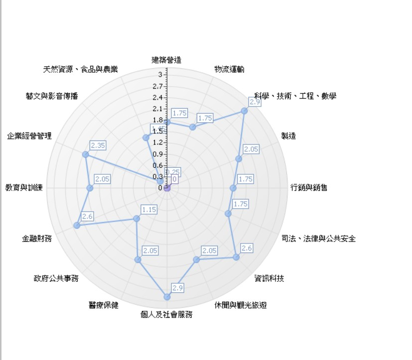

網路管理工程師 、 系統工程師 、 MIS工程師
1. Firewall（FortiGate）等設備維護、優化。
2. Switch（Cisco、Dell）等設備維護、優化。
3. SD-WAN、SSL-VPN、Site to Site VPN等相關管理、維護、建置及優化。
4. 公司內部網路架構相關管理、維護、建置及優化。
5. 協助相關部門需求環境的網路建置及調整。
6. 依能力證照調整起薪。
接受身份:不拘
工作經歷:2年以上工作經驗
學歷要求:大學以上
科系要求:電算機學門資訊科學學門
專業證照:CCNA CCNP RHCE VCP
附加條件:1.對於網路有基本觀念：CCNP 尤佳
2.有 Linux (RHCE7 / CentOS7)相關經驗，RHCE 證照尤佳
3.對於虛擬化技術有基本概念：VMware vSphere (或 VMware Workstation, VirtualBox, Xen, KVM 其中之一)，有 VCP 證照